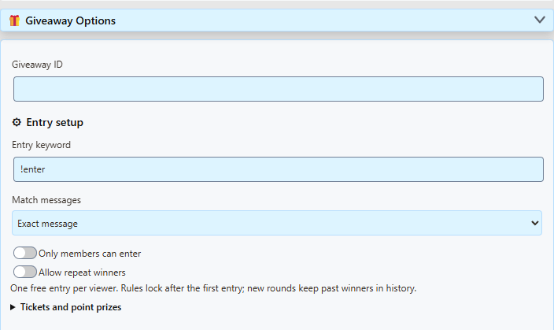
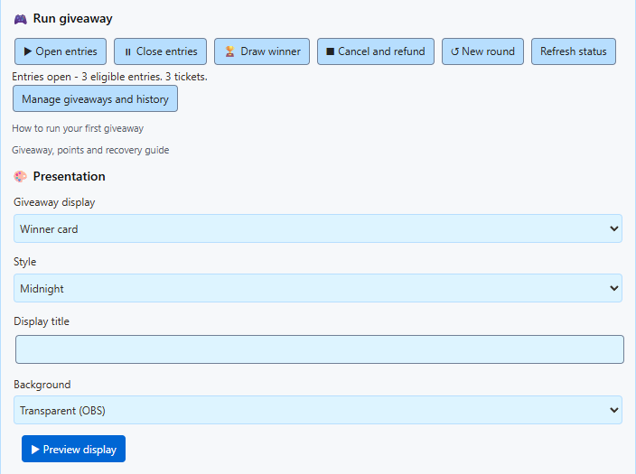
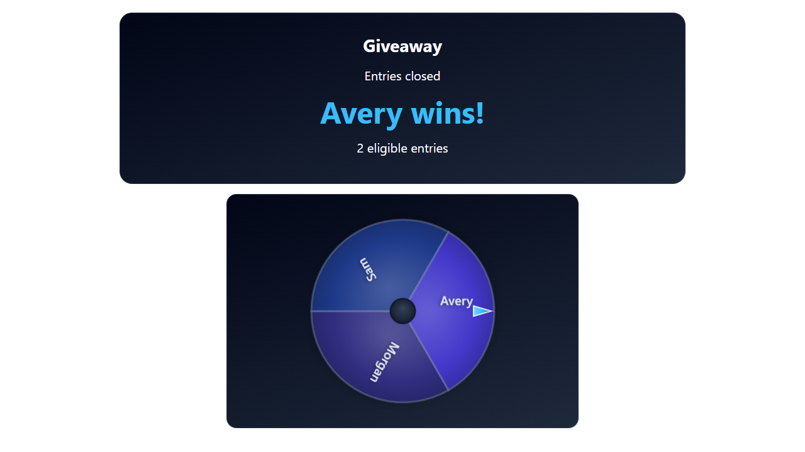

1. Find the Giveaway Tool
If you can already see Giveaway Tool, Entry setup, and Run giveaway, you are in the right place. There is no extra giveaway popup to find.
Otherwise, open SSN's main settings menu. With the browser extension, click your browser's extensions/puzzle-piece icon, then Social Stream Ninja. In the desktop app, use the SSN settings menu that contains your overlay links. Search for giveaway and expand Giveaway Options. If you see the beginner welcome screen, choose Switch to full mode.
- Viewers enterIn your normal captured chat
- You run the drawIn the SSN settings menu
- OBS shows the resultUsing the copied display link
The link beginning https://socialstream.ninja/giveaway.html?session=... opens the audience display. With &managed in that link, you control the giveaway from SSN; the display does not have entry or draw buttons.
2. Run a simple free giveaway
Before starting, keep SSN enabled and your chat sources connected. Check that ordinary viewer messages appear in your SSN chat dock.
- Keep the basic settings. Leave Giveaway ID as
default(blank also means default), Entry keyword as!enter, and Match messages as Exact message. Leave Only members can enter and Allow repeat winners off. - Check Tickets and point prizes. For a normal free draw, use Round type: Giveaway, Points per ticket: 0, Point prize per winner: 0, and Number of prizes: 1. You do not need the Loyalty Points System for this.
- Click Open entries. Tell viewers: “Type
!enterin chat to join the giveaway.” They enter in the chat you are capturing, such as YouTube or Twitch. They do not need the giveaway link. - Check the entries. Click Refresh status to update the count in the menu, or Manage giveaways and history to inspect names. Repeating
!enterdoes not give the same viewer extra free entries. - Click Close entries, then Draw winner. SSN randomly selects an eligible entry. The menu reports the winner, and connected displays show the same result. Drawing also closes entries automatically.
- For another giveaway, click New round, then Open entries. The new round starts with an empty entry list; viewers must enter again. Previous results remain in history.
{kind=link}

!enter after entries open, then click Refresh status. The popup count does not update automatically as chat arrives.The status may also show a ticket count. Each free entry counts as one ticket; with the ticket price set to zero, no points are charged.
SSN selects the winner. If your prize is a gift, game key, or other item, you arrange delivery yourself. A Point prize specifically awards SSN loyalty points.
3. Show the giveaway in OBS
- Under Presentation, choose a Giveaway display: Winner card shows the result directly; Name reel cycles names before the reveal; Community wheel reveals the result with a spinning wheel.
- Choose a Style, an optional Display title, and Transparent (OBS) for the background. Themed panel adds a background panel.
- Click Preview display to check the appearance. This uses sample names; it does not open entries, add real viewers, or run your actual draw.
- Click [copy link] beside Giveaway Tool. In OBS, add a Browser Source and paste that link into its URL field. Start with a width of 1280 and height of 720.
- Keep SSN running and use its Open entries, Close entries, and Draw winner buttons. No OBS “Interact” step is needed for this managed display.
{kind=link}

{kind=link}

Copy the link again after changing presentation settings and replace the URL in OBS. Use the normal copied link, not the preview URL. Keep the session and any password from your own SSN menu, so the display connects to your giveaway.
[edit link] loads an existing overlay URL into the menu's link settings. You do not need it for a first giveaway. [?] opens the short help text.
What the entry settings mean
| Setting | Meaning |
|---|---|
| Giveaway ID | Names the giveaway being controlled. Use default for one giveaway. It is separate from your session ID. Multiple giveaways need distinct IDs and matching display links. |
| Entry keyword | What viewers type, such as !enter or !raffle. Tell viewers the keyword you actually configured. |
| Exact message | The whole message must be !enter, ignoring capitalization and surrounding spaces. !enter please does not match. |
| Keyword anywhere (separate word) | Allows a message such as I'd like to join !enter please. The keyword must be separated by spaces; !enter! is not the same keyword. |
| Only members can enter | Requires membership information in the captured message. Leave off for an open giveaway; it does not mean “anyone watching” or “any follower.” Support depends on the chat source. |
| Allow repeat winners | Allows the same viewer to win more than one prize within the current round. With it off, a winner is removed from that round's eligible pool. A new round allows previous winners to enter again. |
| Tickets and point prizes | Optional SSN loyalty-point settings and other game types. Leave costs and point prizes at zero for a free giveaway. These are separate from Twitch channel points. |
| Number of prizes | How many results the round allows. Set this before opening entries. For multiple giveaway winners, click Draw winner once per prize; do not create a new round between those draws. |
Set entry rules before people join. Once entries exist, changing menu fields does not change the active round's rules. To change them, cancel the round, create a new round, configure it, and open entries again. The manager shows the rules actually saved for the round.
Free entries are tracked by the identity supplied by each chat source. The same person entering on two platforms is not automatically recognized as one person.
What the buttons do
| Button | Use it to |
|---|---|
| Open entries | Accept entries, or reopen a paused round before any winner is drawn. Reopening keeps existing entries and must use the same locked rules. |
| Close entries | Stop new entries while keeping the current pool. |
| Draw winner | Close entries and select one winner. There must be at least one eligible entry. With one prize configured, the round is then complete. |
| Cancel and refund | Cancel before drawing. Any reserved ticket points are returned. It cannot undo an already drawn result. |
| New round | Start over with an empty pool and keep prior history. Entries start closed. Paid rounds with reserved points must be cancelled/refunded first. |
| Refresh status | Read the current count and latest result without changing the giveaway. |
| Manage giveaways and history | Inspect participants and saved rules, remove an entry before drawing, review results, or export history/backups. |
If something does not work
- Still zero entries? Click Refresh status. Check that the viewer's message appears in SSN, entries were open when it arrived, the keyword matches, and members-only is off. For a free keyword draw, the ticket price must be zero. Give simultaneous free giveaways different keywords.
- Test messages do not enter? Bot, private, historical, replayed, and economy-test-marked messages are excluded. Use Preview display for a visual check; to rehearse real entry capture, send the keyword through a connected chat after opening entries.
- The display only says “Waiting for giveaway”? Keep the SSN host running, use the copied link from the same session, and click Refresh status. Check that the menu and display use the same Giveaway ID. A preview URL only shows sample data.
- No buttons on the giveaway page? That is expected for the managed audience display. Return to Giveaway Options in SSN.
- The round is complete or rules are locked? Use New round after a completed draw. To abandon an undrawn round, use Cancel and refund first, then New round.
- Restarted SSN? Saved rounds remain in that local browser/app profile; open rounds close for review. Use the same session, refresh the status, and review before reopening. Changing sessions selects a separate set of giveaways.
Ready for paid tickets, point prizes, multiple giveaways, Stream Deck, or Event Flow? Continue with Giveaways, tickets and point prizes.